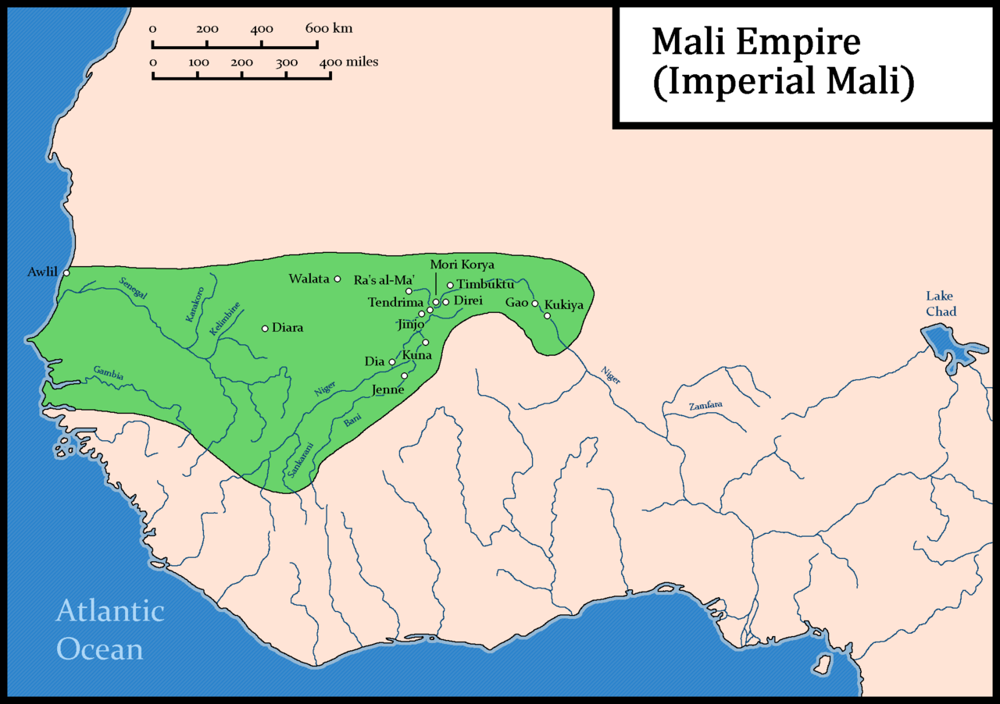

Header section

The Mali Empire, one of the most renowned civilizations in West African history, flourished from the
13th to the 16th century. Located in the region encompassing modern-day Mali, Senegal, Mauritania, and parts
of Guinea and Niger, Mali rose to prominence under the leadership of Sundiata Keita, who founded the empire
in the early 13th century. Sundiata's conquests and diplomatic skills expanded Mali's territory, creating a
vast and diverse realm known for its wealth, cultural achievements, and Islamic scholarship.
At its peak, the Mali Empire was famed for its control over the lucrative trans-Saharan trade routes,
particularly those connecting West Africa with North Africa and the Mediterranean world. Mali's wealth was
built upon its monopoly on gold production, as well as its trade in other valuable commodities such as salt,
ivory, and slaves. The empire's capital, Niani, became a center of commerce, learning, and Islamic culture,
attracting scholars, traders, and artisans from across the Islamic world and beyond.
The Empire of Mali
The rise of the Mali Empire is closely tied to the legendary figure of Sundiata Keita, who is considered the
empire's founder. Sundiata, a prince of the Mandinka people, rose to power in the early 13th century after
overthrowing the oppressive Sosso kingdom, led by the tyrannical ruler Sumanguru Kante. Sundiata's victory
in the Battle of Kirina around 1235 marked the beginning of Mali's ascendancy.
Under Sundiata's leadership, the Mali Empire began to expand rapidly, absorbing neighboring states and
establishing itself as a dominant force in West Africa. Sundiata's diplomatic skills, military prowess, and
commitment to justice and good governance played crucial roles in Mali's rise. His empire-building efforts
were further solidified by his successors, who continued to expand Mali's territory through conquests and
alliances.
One of the key factors contributing to Mali's rise was its control over lucrative trade routes, particularly
those connecting West Africa with North Africa and the Mediterranean world. Mali's strategic location
allowed it to monopolize the trans-Saharan trade in gold, salt, ivory, and other valuable commodities. This
trade brought immense wealth to Mali, fueling its growth and prosperity.
The Mali Empire reached its zenith under rulers like Mansa Musa, who ascended to the throne in the early
14th century. Mansa Musa's legendary pilgrimage to Mecca in 1324, during which he distributed vast amounts
of gold, further enhanced Mali's reputation as a wealthy and powerful empire on the global stage.
Overall, the rise of the Mali Empire was characterized by visionary leadership, military conquests,
strategic control of trade routes, and a flourishing economy fueled by abundant natural resources.
back to top